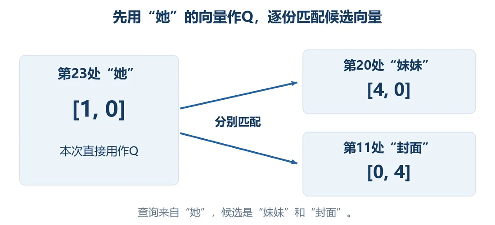
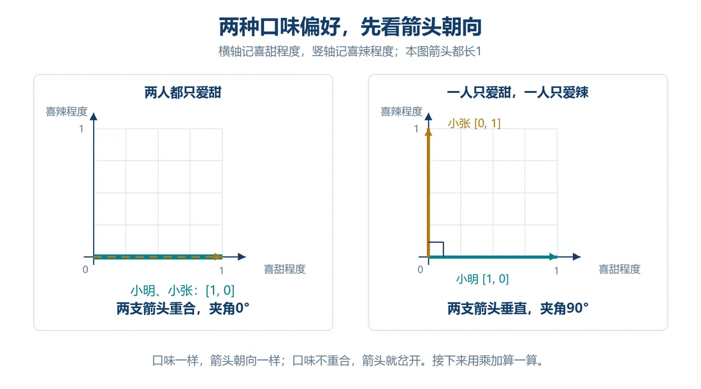
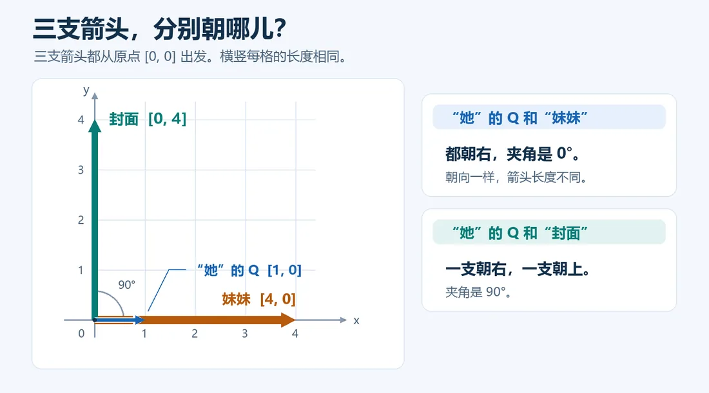
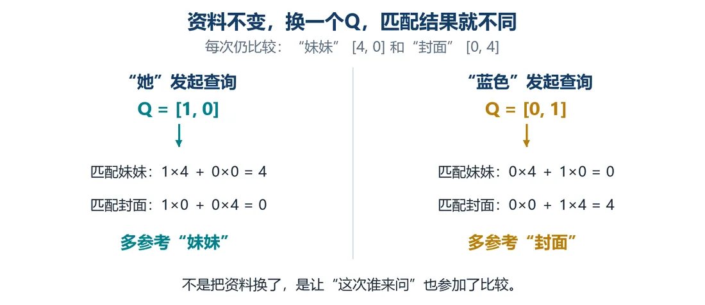

我们在这儿
我们把一句话拆成 31 个 Token、转向量、加位置，又让每个位置能直接拿到句子里任意 Token 的向量。可到底参考哪些词、权重占多少，都是我们手动设定的，不可能每句话都靠人工调。这一篇想试试，能不能让每个 Token 按自己的需要，自己选要关注什么。
这一篇要解决让电脑用当前位置的 Q 自动给候选资料打匹配分。
大概阅读约 9–12 分钟
上一篇的 3/4、1/4 是手工定下的固定配方，不论处理哪个位置，都套同一套。
可读“她”想知道她指谁，读“蓝色”想知道什么东西是蓝的，两套线索不一样。一套固定配比，怎么顾得过来？
想让电脑自主选，就得给它一套判断依据。
借鉴我们人读句子：
问题不一样，要找的线索就不一样。所以不能只看手上有什么素材，还得带上“我现在要找什么”。
把心里这个问题转成电脑能算的数字，最简单的办法：直接拿当前位置的向量来做比对。
这是一次独立的手工演算，不和第 2、3 篇的数值串在一起：“她” [1, 0]，“妹妹” [4, 0]，“封面” [0, 4]。
拿“她”的 [1, 0] 发起检索。这一组用来查询比对的向量，叫查询向量（Query，简称 Q），就对应心里那个问题。
Q 跟每一份候选资料一一比对，算出一个匹配分。
这个分可以理解成这次检索的合拍程度：

只有两个数字的向量，可以画成坐标系里的箭头。
先用甜辣口味讲：用 [喜甜, 喜辣] 记口味。
两支箭头长度一样、指向不同。都爱甜就重合，一甜一辣夹角就是 90 度。夹角大小，能看出合不合拍。

可电脑看不了图，只能算。把第一个向量写成横行，第二个转成竖列，对应位置相乘、再把乘积加起来，这叫点积。两个向量记作 a、b，b 转置记作 bT，点积就写成 abT。点积同时受方向和长度影响，这里刻意让向量等长，方便单独看方向，长度的影响留到后面。
转置就是把行和列对调：原来的横行变成竖列，记作 bT。这样第一个向量横写、第二个竖摆，才能一格对一格。
点积就是对应位置相乘、再把乘积全加起来，最后得到一个数。下面两个向量，初始正好是“她” [1, 0] 对“妹妹” [4, 0]，点积得 4。
“她”的 Q 是 [1, 0]：
于是电脑优先参考妹妹。
封面这 0 分，不是拉力小一点，是这一下根本没拉。

再把 Q 换成“蓝色” [0, 1]，两份候选资料不变：
重点关注的对象，跟着换了。
候选完全没变，只换了查询 Q，结果就变。死板的固定配比，终于能跟着“当前要找什么”灵活变化。
这套办法暂且叫Q 点积匹配法。

静态图先把两次匹配摆出来。下面亲手拖一拖，看看 0 分那根弹簧为什么根本拉不动。
这一篇收个尾
这一篇拿到：用 Q 和候选向量点积，匹配分会随查询变化。
下一篇接着看：把点积分转成总和为 1 的比例。